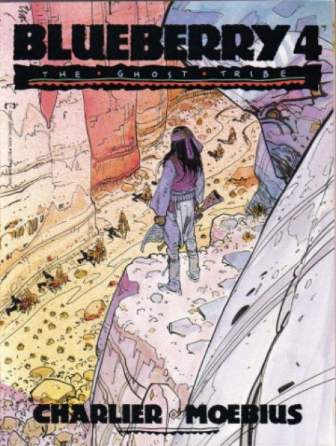
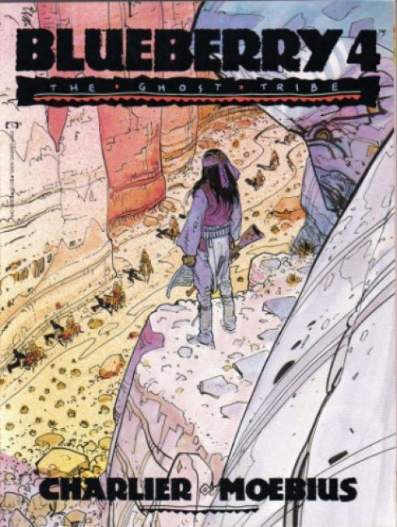

#1 "Chihuahua Pearl!" After the Civil War, U. S. Cavalry Lt. Mike Blueberry wanders the American South-west and Mexican border, getting into and out of trouble, but mostly in.
#2 "Ballad for a Coffin!" The U.S. government has sent Blueberry deep under cover in Mexico to recover a half million in gold before the confederates can use it to restart the civil war. His chances grow slimmer every day as the Mexican army and rebel deserters go after the money, themselves.
#3 "Angel Face!" Kelly hires Angel Face to assassinate President Ulysses Grant as he enters Durango. They fail to kill the president, and the president suspects that Blueberry is trying to kill him so he can get away with stealing the gold he was sent to recover. Now there is a bounty on Blueberrys head.
#4 "The Ghost Tribe!"
#5 "The End of The Trail!"